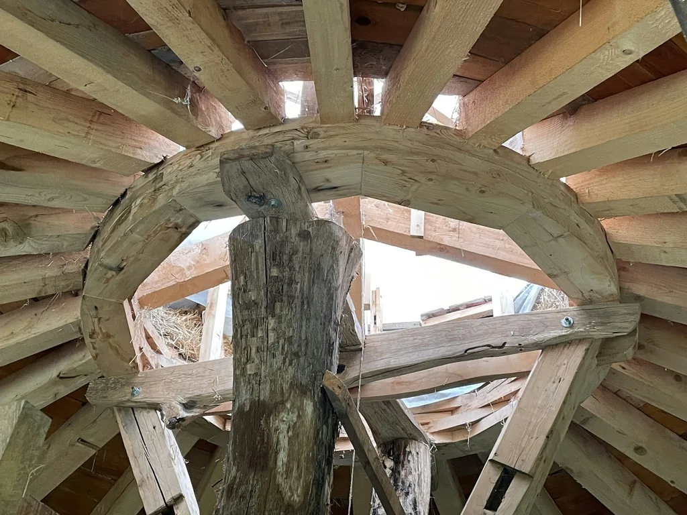
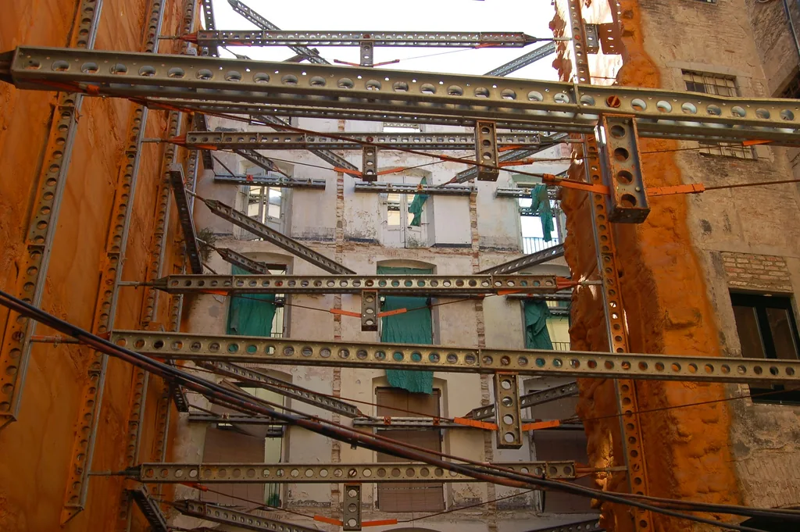

Bureaux en ossature bois
Réalisation de bureaux en ossature bois.
Ces chantiers portent sur l’ossature bois, la toiture et la transformation de structures existantes.
Les photographies illustrent les types de travaux présentés. Elles ne représentent pas les chantiers décrits.
Réalisation de bureaux en ossature bois.

Réfection d’une toiture.

Modification de la charpente pour permettre l’aménagement des combles.

Réalisation d’un plancher bois de grande portée.
Réalisation d’une charpente de toit plat sans poteaux.

Remplacement d’une ferme en conservant la toiture en place.

Pose de poutres métalliques en remplacement d’un mur.

Démontage d’une cheminée en béton en pignon.
Parlons de votre projet de rénovation et des travaux que vous envisagez.